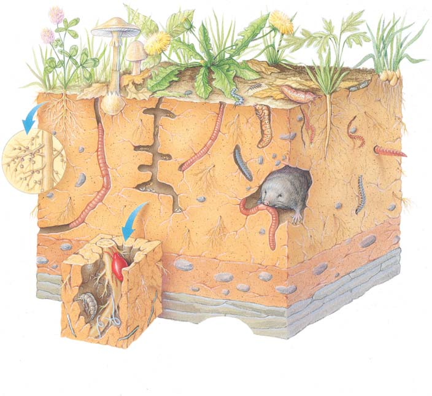

36 Raíces y nutrición mineral
761
CONCEPTOS CLAVE
36.1 La estructura de la raíz se relaciona con la función. Los tejidos primarios (epidermis, corteza, endodermis, periciclo, xilema y fl oema) de las raíces se desarrollan a partir de meristemas apicales radiculares. Los tejidos secundarios (madera y corteza) de las raíces leñosas se desarrollan a partir de meristemas laterales. 36.2 Las raíces se asocian e interactúan con muchos organismos, incluidas bacterias y hongos del suelo. 36.3 El suelo, la capa de corteza de la Tierra que se modifi có por contacto con el clima, el viento, el agua y los organismos, contiene la mayor parte de los elementos esenciales requeridos por las plantas.
L
os sistemas de raíces (radicales o radiculares) que se ramifi can bajo tierra con frecuencia son más extensos que las partes aéreas de una planta. Las raíces de una planta de maíz, por ejemplo, pueden crecer hasta una profundidad de 2.5 m y extenderse hacia afuera 1.2 m desde el tallo. Los árboles taray ( Tamarix ) supuestamente tienen raíces que crecen hasta una profundidad de 50 m para explotar agua subterránea. La extensión de la profundidad y dispersión de la raíz de una planta varían considerablemente entre diferentes especies e incluso entre distintos individuos de la misma especie. Puesto que las raíces por lo general son subterráneas y están fuera de la vista, las personas no siempre aprecian las importantes funciones que realizan. Primero, como puede atestiguar quienquiera que haya arrancado maleza, las raíces anclan una planta fi rmemente en el suelo. Una planta necesita un cimiento sólido desde donde crecer. El anclaje fi rme es esencial para la supervivencia de una planta de modo que el tallo permanezca erguido, lo que permite a las hojas absorber luz solar de manera efectiva. Segundo, las raíces absorben agua y minerales disueltos (nutrientes inorgánicos) como nitratos, fosfatos y sulfatos, que son necesarios para sintetizar importantes moléculas orgánicas. Dichos minerales disueltos se transportan entonces a lo largo de toda la planta en el xilema. Muchas raíces realizan la función de almacenamiento. Zanahorias, papas dulces, yuca y otros cultivos de raíces son importantes fuentes de
Raíces de almacenamiento. Las plantas de yuca ( Manihot esculenta ) se excavaron para mostrar el hábito de crecimiento de las raíces de almacenamiento. Las raíces de yuca son un importante cultivo básico en los trópicos. Algunas raíces de yuca contienen un veneno (ácido prúsico), que se destruye durante la cocción.
© Inga Spence/Alamy
762 Capítulo 36
alimento humano (vea la fotografía). El exceso de azúcares producidos en las hojas mediante fotosíntesis se transporta en el fl oema hacia las raíces para almacenar alimento (por lo general como almidón o sacarosa) hasta que sea necesario. Otras plantas, en particular las que viven en regiones áridas, poseen raíces de almacenamiento adaptadas para almacenar agua. En ciertas especies, las raíces están modifi cadas para funciones distintas al anclaje, absorción, conducción y almacenamiento. Las raíces especializadas para realizar funciones poco comunes se estudian más adelante en este capítulo.
36.1 ESTRUCTURA Y FUNCIÓN DE LA RAÍZ
OBJETIVOS DE APRENDIZAJE
1 Distinguir entre los sistemas de raíz principal y los de raíz fi brosa. 2 Comparar secciones transversales de una raíz primaria eudicotiledónea y una monocotiledónea, y describir las funciones de cada tejido. 3 Trazar la ruta del agua y los iones minerales desde el suelo a través de los distintos tejidos radicales y distinguir entre el simplasto y el apoplasto. 4 Discutir la estructura de las raíces con crecimiento secundario. 5 Describir al menos tres raíces que estén modifi cadas para realizar funciones poco comunes.
En las plantas se presentan dos tipos de sistemas radicales, un sistema de raíz principal y un sistema de raíz fi brosa ( FIGURA 36-1 ). Un sistema de raíz principal consiste en una raíz que se forma a partir de la radícula , o raíz embrionaria, de la plántula que se alarga. Muchas raíces laterales de
varios tamaños se ramifi can desde una raíz principal. Las raíces principales son características de muchas eudicotiledóneas y gimnospermas. Un diente de león es un buen ejemplo de una planta herbácea común con un sistema de raíz principal. Algunos árboles, como el nogal, conservan sus raíces principales, que se vuelven muy grandes conforme la planta envejece. Sin embargo, la mayoría de los árboles tienen raíces principales cuando son jóvenes y más tarde desarrollan grandes raíces laterales poco profundas de las que se ramifi can otras raíces que crecen hacia abajo. Un sistema de raíz fi brosa tiene muchas raíces de tamaño similar que se desarrollan desde el extremo del tallo, con raíces laterales que ramifi can desde estas raíces. Los sistemas de raíces fi brosas se forman en las plantas que tienen una raíz embrionaria de vida corta. Las raíces se originan primero desde la base de la raíz embrionaria y más tarde a partir de tejido del tallo. Las raíces principales de un sistema de raíz fi brosa no surgen de raíces preexistentes, sino desde el tallo; dichas raíces se llaman raíces adventicias . Los órganos adventicios ocurren en una posición inusual, como las raíces que crecen sobre un tallo, o las yemas que lo hacen en raíces. Cebollas, cizañas y otras monocotiledóneas tienen sistemas de raíces fi brosas. Los sistemas de raíz principal y de raíces fi brosas están adaptados para obtener agua en secciones diferentes del suelo. Los sistemas de raíz principal con frecuencia se extienden hacia abajo hacia el suelo para obtener agua ubicada profundo bajo tierra, mientras que los sistemas de raíces fi brosas, que se ubican relativamente cerca de la superfi cie del suelo, están adaptados para obtener agua de lluvia desde un área más grande conforme ella drena hacia el suelo.
Las raíces tienen caliptra y pelos radicales
Debido a la necesidad de adaptarse al ambiente del suelo en lugar del ambiente atmosférico, las raíces tienen varias estructuras, como caliptras (cofi as radicales o pilorrizas) y pelos radicales, que no tienen los brotes. Aunque tallos y hojas tienen varios tipos de pelos, son distintos a los pelos radicales en estructura y función. La punta de cada raíz está cubierta con una caliptra , una capa protectora con forma de dedal y muchas células de grosor que cubre el delicado meristema apical de la raíz ( FIGURA 36-2a ; vea también la fi gura 33-6). Conforme la raíz crece, y empuja a través del suelo, las células de la caliptra mudan por la resistencia friccionante de las partículas del suelo y se sustituyen con nuevas células formadas por el meristema apical radicular. Las células de caliptra segregan polisacáridos lubricantes que reducen la fricción conforme la raíz pasa a través del suelo. La caliptra también parece involucrarse en la orientación de la raíz de modo que crezca hacia abajo (vea la discusión del gravitropismo en el capítulo 38). Cuando una caliptra se remueve, el meristema apical radicular produce una nueva cofi a. Sin embargo, hasta que la caliptra se regenera, la raíz crece al azar en lugar de en la dirección de la gravedad. Los pelos radicales (o radiculares) son extensiones tubulares de vida corta de células epidérmicas ubicadas justa abajo de la punta de raíz que crece. Los pelos radicales se forman continuamente en el área de maduración celular más cercano a la punta de la raíz para sustituir a los que mueren en el extremo más maduro de la zona de pelos radicales ( FIGURA 36-2b ; vea también la fi gura 33-6). Cada pelo radical es corto (por lo común menos de 1 cm de largo), pero son muy numerosos. Los pelos radicales aumentan enormemente la capacidad absorbente de las raíces al aumentar su área superfi cial en contacto con el suelo húmedo. Las partículas de suelo están recubiertas con una capa microscópica de agua donde se disuelven los minerales. Los pelos radicales establecen un contacto íntimo con las partículas de suelo, lo que permite absorción efi ciente de agua y minerales.
FIGURA 36-1 Animada Sistemas de raíces (a) Un sistema de raíz principal se desarrolla a partir de la raíz embrionaria en la semilla. (b) Las raíces de un sistema de raíces fi brosas son adventicias y se desarrollan a partir del tejido del tallo.
Raíces y nutrición mineral 763
dical que le permite absorber más agua del suelo. La epidermis radical no segrega una gruesa cutícula cerosa en la región de los pelos radicales porque esta capa impediría la absorción de agua del suelo. Tanto la falta de cutícula como la presencia de pelos radicales aumentan la absorción. Comenzando con los pelos radicales, la mayor parte del agua que entra a la raíz se mueve a lo largo de las paredes celulares en lugar de entrar a las células. Uno de los principales componentes de la pared celular es celulosa, que absorbe agua como hace una esponja. Un ejemplo de las propiedades absorbentes de la celulosa se encuentra en las bolas de algodón, que son casi pura celulosa. La corteza , que está compuesta sobre todo de células de parénquima holgadamente empacadas, compone el volumen de una raíz eudicotiledónea herbácea. Por lo general, las raíces carecen de células de colénquima de soporte, probablemente porque el suelo sostiene la raíz, aunque las raíces pueden desarrollar conforme envejecen algo de esclerénquima (otro tejido de sostén; vea el capítulo 33). La principal función de la corteza de la raíz es almacenamiento. Un examen microscópico de las células de parénquima que forman la corteza con frecuencia revela numerosos amiloplastos (vea las fi guras 36-3b y 3-9a), que almacenan almidón. El almidón, un carbohidrato insoluble compuesto de subunidades glucosa, es la forma más común de energía almacenada en plantas. Cuando se usan en un momento posterior, estas reservas proporcionan energía para actividades como crecimiento y sustitución celular después de una lesión. Los grandes espacios intercelulares (entre células), una característica común de la corteza de la raíz, ofrecen una ruta para la ingesta de agua y permiten la aireación de la raíz. El oxígeno que necesitan las células de raíz para la respiración aeróbica se difunde desde espacios de aire en el suelo hacia los espacios intercelulares de la corteza y desde ahí hacia las células de la raíz. El agua y los minerales disueltos que entran a la corteza de la raíz desde la epidermis se mueven en disolución a lo largo de dos rutas: simplasto y apoplasto ( FIGURA 36-4 ). El simplasto es el continuo de
El desarrollo de los pelos radicales está bajo control de dos genes reguladores que codifi can factores de transcripción . (Recuerde del capítulo 14 que los factores de transcripción son proteínas que enlazan ADN que regula la síntesis de ARN a partir de plantillas de ADN). En 2007, investigadores del Reino Unido y de Francia reportaron en la revista Science que estos dos genes tienen un origen antiguo con importancia evolutiva. Los biólogos compararon dos genes que controlan la formación de rizoides en la etapa gametofi ta del musgo Physcomitrella patens con los que controlan la formación de pelos radicales en la etapa esporofi ta de la angiosperma Arabidopsis thaliana . Descubrieron que los genes codifi can factores de transcripción que en esencia son los mismos en ambas plantas. Los musgos como Physcomitrella representan un linaje antiguo de plantas terrestres (vea el capítulo 27). Por lo tanto, parece que dichos genes se conservaron durante la evolución de una gametofi ta dominante en musgos a una esporofi ta dominante en las plantas con fl ores.
La disposición de los tejidos vasculares distingue las raíces de eudicotiledóneas y monocotiledóneas herbáceas
Aunque existe considerable variación en las raíces eudicotiledóneas y monocotiledóneas herbáceas, todas tienen una cubierta protectora exterior (epidermis), una corteza para almacenar almidón y otras moléculas orgánicas, y tejidos vasculares para conducción. Considere primero la estructura de las raíces eudicotiledóneas herbáceas.
En la mayoría de las raíces eudicotiledóneas herbáceas, el núcleo central de tejido vascular carece de médula
La raíz de ranúnculo es una raíz eudicotiledónea representativa con crecimiento primario ( FIGURA 36-3 ). Como otras partes de esta eudicotiledónea herbácea, una sola capa de tejido protector, la epidermis , cubre sus raíces. Los pelos radicales son una modifi cación de la epidermis ra-
Caliptra. MO de punta de raíz de roble ( Quercus sp. ) que muestra su caliptra. El meristema apical radicular está protegido por la caliptra.
Pelos radicales. Cada delicado pelo es una extensión de una sola célula de la epidermis de la raíz. Los pelos radicales aumentan el área superficial de la raíz en contacto con el suelo. Esta plántula de rábano ( Raphanus sativus ) mide aproximadamente 5 cm de largo.
Pelos radicales
Aire del suelo
Agua del suelo Partículas del suelo
Epidermis
Meristema apical radicular (área de división celular)
Caliptra
250 μ m
Runk/Rannels/Grant Heilman Photography
Cengage
FIGURA 36-2 Animada Estructuras únicas de las raíces
764 Capítulo 36
Raíz eudicotiledónea. La corteza compone la mayor parte de las raíces eudicotiledóneas herbáceas. Observe el xilema con forma de X en el centro de la raíz.
Estela de raíz eudicotiledónea. Alrededor del núcleo sólido de los tejidos vasculares hay una sola capa de periciclo, que es meristemática en las raíces que crecen.
Epidermis
Corteza
Células de corteza llenas con amiloplastos
Célula de endodermis
Célula de periciclo
Célula de floema
Elementos de vaso de xilema
Espacio intercelular en corteza
Estela
250 μ m 25 μ m
Ed Reschke/Peter Arnold, Inc.
© Jubal Harshaw/Shutterstock
FIGURA 36-3 MO de secciones transversales de una raíz eudicotiledónea herbácea Se muestra una raíz de ranúnculo ( Ranunculus ).
La ruta de simplasto ( azul ) consiste en células vivas interconectadas mediante plasmodesmos. La ruta apoplasto ( rojo ) usa paredes celulares y espacios intercelulares.
Vasos de xilema
Células de floema Periciclo
Movimiento ascendente mediante tensión-cohesión
Endodermis
Banda de Caspari
Corteza Epidermis
Simplasto: citoplasma interconectado de células vivas
Agua y minerales nutrientes disueltos
Apoplasto: espacios de pared celular interconectados
Pared celular
Plasmodesmo
Membrana plasmática
Pelo radical
FIGURA 36-4 Rutas de agua y minerales disueltos en la raíz Agua y minerales disueltos viajan de célula a célula a lo largo de las paredes celulares porosas interconectadas (el apoplasto) o desde el citoplasma de una célula a otra a través de plasmodesmos (el simplasto). Al
llegar a la endodermis, el agua y los minerales pueden moverse hacia el centro de la raíz sólo si pasan a través de una membrana plasmática y entran al citoplasma de una célula endodérmica.
PUNTO CLAVE

Raíces y nutrición mineral 765
de acuaporinas , proteínas de membrana integral que facilitan el rápido transporte de agua a través de la membrana ( FIGURA 36-6a ). Como en el movimiento de agua a través de la bicapa de lípidos, el agua se mueve a través de acuaporinas sólo a lo largo del gradiente osmótico, desde una región de mayor concentración de agua hacia una región de menor concentración de agua. El papel clave de las acuaporinas en la ingesta de agua por las células de raíz se encuentra actualmente bajo estudio activo. Los minerales entran a las células endodérmicas al pasar a través de proteínas transportadoras en sus membranas plasmáticas. En el transporte activo mediado por transportador , los iones minerales se bombean contra su gradiente de concentración; esto es: desde un área de baja concentración de dicho mineral en la disolución del suelo, hacia una área de alta concentración en las células de la planta ( FIGURA 36-6b ). Una de muchas razones por las que las células de raíz requieren azúcar y oxígeno para la respiración aeróbica es que este transporte activo requiere el gasto de energía, por lo general en la forma de ATP. Desde la endodermis, agua y iones minerales entran al xilema de raíz (los botánicos todavía no saben con precisión cómo ocurre esto) y se conducen hacia el resto de la planta. En el centro de una raíz primaria eudicotiledónea está la estela , o cilindro vascular , un cilindro central de tejidos vasculares. La capa más externa de la estela es el periciclo , que está justo adentro de la endodermis. El periciclo consiste en una sola capa de células de parénquima que dan lugar a raíces laterales multicelulares, también llamadas raíces rama ( FIGURA 36-7 ). Las raíces laterales se originan cuando las células en una porción del periciclo comienzan a dividirse. Conforme crece, la raíz lateral empuja a través de varias capas de tejido de raíz (endodermis, corteza y epidermis) antes de entrar al suelo. Cada raíz lateral tiene to-
citoplasma vivo, que se conecta desde una célula a la siguiente mediante puentes citoplasmáticos llamados plasmodesmos (vea la fi gura 5-27). Algunos iones minerales disueltos se mueven desde la epidermis a través de la corteza vía el simplasto. El apoplasto consiste en las paredes celulares porosas interconectadas de una planta, a lo largo del cual el agua y iones minerales se mueven libremente. El agua y los iones minerales pueden difundirse a través de la corteza sin haber cruzado una membrana plasmática para entrar a una célula viva. En conjunto, simplasto y apoplasto constituyen todo el cuerpo de la planta. La capa interior de la corteza, la endodermis , regula el movimiento de agua y minerales que entran al xilema en el centro de la raíz. Desde el punto de vista estructural, la endodermis difi ere del resto de la corteza. Las células endodérmicas se ajustan cómodamente unas con otras, y cada una tiene una región especial en forma de banda, llamada banda de Caspari ( FIGURA 36-5 ), en sus paredes radial (lateral) y transversal (superior e inferior). Las bandas de Caspari contienen suberina , un material graso que es impermeable. (Recuerde del capítulo 33 que la suberina también es el material impermeable en las paredes celulares de corcho). Hasta llegar a la endodermis, la mayor parte del agua y los minerales disueltos viajan a lo largo del apoplasto y por lo tanto no pasan a través de una membrana plasmática o entran al citoplasma de una célula de raíz. Sin embargo, la banda de Caspari impermeable en las paredes radial y transversal de las células endodérmicas evita que el agua y los minerales continúen moviéndose pasivamente a lo largo de las paredes celulares. Para que las sustancias pasen más allá, hacia el interior de la raíz, deben moverse desde las paredes celulares hacia el citoplasma de las células endodérmicas. El agua entra por ósmosis, tanto directamente a través de la bicapa de lípidos de la membrana plasmática endodérmica como a través
La endodermis regula los tipos de minerales que se absorben del suelo y se conducen al resto del cuerpo de la planta.
Endodermis
Banda de Caspari
Entrada vía simplasto
Entrada vía apoplasto
Corteza
Banda de Caspari
Movimiento de agua a través de la endodermis hacia el centro de la raíz Sección transversal de raíz
Corteza
Endodermis
Epidermis
FIGURA 36-5 Animada Endodermis e ingesta de minerales Observe la banda de Caspari alrededor de las paredes radial y transversal que evitan que el agua y los minerales disueltos pasen a la estela a lo largo de las paredes celulares. Para llegar a los tejidos vasculares, el agua y los minerales disueltos deben pasar a través de las membranas plasmáticas de las células endodérmicas.
PUNTO CLAVE
766 Capítulo 36
Después de pasar a través de las células endodérmicas, el agua entra al xilema de la raíz, con frecuencia en uno de los brazos de xilema. Hasta este punto, la ruta del agua ha sido horizontal desde el suelo hacia el centro de la raíz:
pelo radical/epidermis ¡ corteza ¡ endodermis ¡
periciclo ¡ xilema de raíz
Una vez que el agua entra al xilema, se transporta hacia arriba a través del xilema de la raíz hacia el xilema del tallo y desde ahí hacia el resto de la planta. Una dirección de conducción del fl oema es desde las hojas, donde se elabora azúcar mediante fotosíntesis, hacia la raíz, donde el azúcar se usa para el crecimiento y mantenimiento de los tejidos de la raíz o se almacena, generalmente como almidón. Otra dirección de conducción del fl oema es desde la raíz, donde el azúcar se almacena como almidón, hacia otras partes de la planta, donde el azúcar se usa para crecimiento y mantenimiento de tejidos. El cámbium vascular , que da origen a tejidos secundarios en las plantas leñosas, se encuentra entre el xilema y el fl oema. Puesto que tiene un núcleo interior de tejido vascular, la raíz eudicotiledónea primaria carece de médula , un tejido fundamental que se encuentra en los centros de muchos tallos y raíces.
El xilema no forma el tejido central en algunas raíces monocotiledóneas
Las raíces monocotiledóneas varían considerablemente en estructura interna en comparación con las raíces eudicotiledóneas. Las capas que se encuentran en algunas raíces monocotiledóneas, a partir desde el exterior, son epidermis, corteza, endodermis y periciclo ( FIGURA 36-8 ). A diferencia del xilema en las raíces eudicotiledóneas herbáceas, el xilema en muchas raíces monocotiledóneas no forma un cilindro sólido en el centro. En vez
das las estructuras y características (caliptra, pelos radicales, epidermis, corteza, endodermis, periciclo, xilema y fl oema) de la raíz más grandes de la que emerge. Además de producir raíces laterales, el periciclo está involucrado en la formación de meristemas laterales que producen crecimiento secundario en raíces leñosas (lo que se estudia más adelante en el capítulo). El xilema , el tejido más central de la estela, con frecuencia tiene dos, tres, cuatro o más extensiones, o “brazos de xilema” (vea la fi gura 36-3b). El fl oema se ubica en parches entre los brazos de xilema. El xilema y el fl oema de la raíz tienen las mismas funciones y tipos de células que en el resto de la planta: agua y minerales disueltos se conducen en traqueidas y elementos de vaso de xilema, y el azúcar disuelto (sacarosa) se conduce en elementos de tubo criboso de fl oema.
Exterior de la célula
Pared celular
Citosol
Moléculas de agua
Iones
Protones
Bomba de protones
Canal de transporte de iones
Bicapa de lípidos de membrana plasmática
Acuaporina
Movimiento de agua. El agua cruza membranas por difusión a través de la capa de lípidos ( izquierda ) y, más rápidamente, a través de acuaporinas ( derecha ).
Movimiento de iones minerales mediante transporte activo mediado por transportador. La bicapa de lípidos de las membranas vegetales es impermeable a los iones minerales, que sólo pueden pasar a través de canales de transporte de iones. La hidrólisis de ATP bombea protones afuera de la célula, lo que forma un gradiente de protones cargados de energía. Los canales de transporte de iones permiten que los iones minerales entren a la célula con protones.
ATP
Exterior de la célula
Citosol
ADP
FIGURA 36-6 Transporte de agua y minerales a través de las membranas de la planta
100 μ m
Ruptura de epidermis y corteza Raíz lateral Corteza
© Jubal Harshaw/Shutterstock
FIGURA 36-7 MO de una raíz lateral Las raíces laterales se originan en el periciclo.


Raíces y nutrición mineral 767
las secciones separadas de cámbium vascular de modo que éste se convierte en un bucle continuo no circular de células en sección transversal. Conforme el cámbium vascular se divide para producir tejidos secundarios, a la larga forma un cilindro de cámbium vascular que sigue dividiéndose, lo que produce xilema secundario (madera) en el interior y fl oema secundario (corteza interior) en el exterior. La raíz aumenta en circunferencia (grosor) y el cámbium vascular sigue moviéndose hacia afuera. Epidermis, corteza, endodermis y fl oema primario gradualmente se separan conforme la raíz aumenta en circunferencia. La epidermis de la raíz se sustituye con peridermo , compuesto de células de corcho y parénquima de corcho, ambos producidos por el cámbium de corcho (la última fi gura en la tabla 33-4 muestra una MO de peridermo). El cámbium de corcho en la raíz surge inicialmente de regiones en el periciclo.
Algunas raíces están especializadas para funciones poco usuales
Las raíces adventicias usualmente surgen a partir de los nodos de los tallos. Muchas raíces adventicias aéreas están adaptadas para funciones distintas a anclaje, absorción, conducción o almacenamiento. Las raíces de soporte son raíces adventicias que se desarrollan a partir de ramas o un tallo vertical y crecen hacia abajo, al suelo, para ayudar a sostener la planta en una posición erguida ( FIGURA 36-10a ). Las raíces de soporte son más comunes en monocotiledóneas que en eudicotiledóneas. Maíz y sorgo, ambas monocotiledóneas, son plantas herbáceas que producen raíces de soporte. Muchos árboles eudicotiledóneos tropicales y subtropicales, como el mangle rojo, también producen raíces de soporte. Las raíces de muchos árboles de pluviselva son poco profundas y concentradas cerca de la superfi cie en una estera de sólo algunos centímetros de grueso. La alfombrilla de raíz captura y absorbe casi todos los minerales liberados de las hojas por descomposición. Bases o refuerzos abultados llamados contrafuertes mantienen a los árboles erguidos y ayudan en la extensa distribución de las raíces poco profundas ( FI GURA 36-10b ). En ambientes pantanosos o de marea, donde el suelo está inundado o anegado, algunas raíces crecen hacia arriba hasta que están arriba del nivel de la marea alta. Aun cuando las raíces viven en el suelo, todavía requieren oxígeno para la respiración aeróbica. Los suelos inundados carecen de oxígeno, de modo que estas raíces “respiradoras” aéreas, conocidas como neumatóforos , pueden ayudar a las raíces sumergidas en la obtención de oxígeno ( FIGURA 36-10c ). Los neumatóforos, que también ayudan a anclar la planta, tienen un sistema bien desarrollado de espacios de aire internos que es continuo con las partes sumergidas de la raíz, lo que presumiblemente permite el intercambio de gases. Los mangles blanco y negro son ejemplos de plantas con neumatóforos. Las plantas trepadoras y las epifi tas , que son plantas que crecen adheridas a otras plantas, tienen raíces aéreas que anclan la planta a la corteza, rama u otra superfi cie donde crecen. Algunas epifi tas tienen raíces aéreas especializadas para funciones distintas al anclaje. Ciertas orquídeas epifi tas, por ejemplo, tienen raíces fotosintéticas ( FIGURA
36-10d ). Las raíces epifi tas también pueden absorber humedad. Algunas epifi tas parásitas, como el muérdago, tienen raíces modifi cadas que penetran los tejidos de la planta huésped y absorben agua. Otra planta que comienza su vida como epifi ta es la higuera estranguladora, que produce largas raíces que a la larga llegan al suelo y anclan la planta (ahora un árbol en lugar de una epifi ta) en el suelo. El árbol sobre el cual originalmente creció la higuera estranguladora con frecuencia muere conforme la higuera crece alrededor de él, compite con él por luz y otros recursos, y comprime su fl oema secundario.
de ello, fl oema y xilema están en haces alternos separados distribuidos alrededor de la médula central, que consiste en células de parénquima. Dado que virtualmente ninguna monocotiledónea tiene crecimiento secundario, no existe cámbium vascular en las raíces monocotiledóneas. A pesar de su carencia de crecimiento secundario, las monocotiledóneas de larga vida, como las palmeras, pueden tener raíces engrosadas producto de una forma modifi cada de crecimiento primario en el que células parenquimatosas en la corteza se dividen y alargan.
Las plantas leñosas tienen raíces con crecimiento secundario
Las plantas que producen tallos con crecimiento secundario también producen raíces con crecimiento secundario. Dichas plantas, gimnospermas y eudicotiledóneas leñosas, tienen crecimiento primario en meristemas apicales y crecimiento secundario en meristemas laterales. La producción de tejidos secundarios ocurre a cierta distancia atrás de las puntas de las raíces y resulta de la actividad de los mismos dos meristemas laterales que se encuentran en los tallos leñosos: el cámbium vascular y el cámbium de corcho. Las grandes raíces de los árboles con frecuencia son enormes y tienen tanto madera como corteza. En climas templados, la madera de raíces y tallos muestra anillos anuales en sección transversal. Antes de comenzar el crecimiento secundario en una raíz, el cámbium vascular se encuentra entre el xilema primario y el fl oema primario ( FIGURA 36-9 ). Al inicio del crecimiento secundario, el cámbium vascular se extiende hacia el periciclo, que se desarrolla en cámbium vascular opuesto a los brazos de xilema. Como resultado, el periciclo vincula
250 μ m
Célula de endodermis
Célula de la corteza
Célula de epidermis
Célula de periciclo
Célula de médula
Elemento de vaso de xilema
Célula de floema
Estela
Cengage
FIGURA 36-8 MO de una sección transversal de una raíz monocotiledónea Se muestra una raíz de zarzaparrilla ( Smilax ). Como en las raíces eudicotiledóneas herbáceas, la corteza de una raíz monocotiledónea es extensa.
768 Capítulo 36
36.2 ASOCIACIONES E INTERACCIONES DE RAÍCES
OBJETIVO DE APRENDIZAJE
6 Mencionar y describir dos relaciones mutualistas entre raíces y otros organismos.
Conforme las raíces de una planta individual se extienden a través del suelo, con frecuencia encuentran las raíces de plantas relacionadas o no relacionadas. La naturaleza de estas interacciones básicamente es desco-
Repaso
■ ¿Cuáles son las ventajas de un sistema de raíz principal? ¿De un sistema de raíz fi brosa?
■ Si usted examinara una sección transversal de una raíz primaria de una planta con fl ores, ¿cómo determinaría si es eudicotiledónea o monocotiledónea?
■ ¿Qué es el simplasto? ¿El apoplasto?
■ ¿Cómo una raíz eudicotiledónea herbácea desarrolla tejidos secundarios?
■ ¿Cuáles son las funciones de cada uno de los siguientes: raíces de soporte, contrafuertes y neumatóforos?
La producción de tejidos secundarios en raíces, como la que ocurre en los tallos, es resultado de la actividad de dos meristemas laterales: el cámbium vascular y el cámbium de corcho.
Epidermis Corteza Endodermis Periciclo Floema primario Cámbium vascular Xilema primario
Periciclo Floema primario Cámbium vascular Xilema primario
Peridermis y restos de epidermis, corteza, endodermis y periciclo
Restos del floema primario
Floema secundario Cambium váscular Xilema secundario Xilema primario
Floema secundario (corteza interior)
Peridermis y restos oprimidos de los tejidos primarios (corteza exterior)
Restos del xilema primario
Cámbium vascular Xilema secundario (madera)
1
2
3
4
Tejidos en raíz primaria.
Al inicio del crecimiento secundario, el cámbium vascular se extiende hacia el periciclo, y forma un bucle no circular continuo.
El cámbium vascular produce xilema secundario hacia su interior y floema secundario hacia su exterior.
El anillo de cámbium vascular gradualmente se vuelve circular. Conforme el cámbium vascular sigue dividiéndose, se destrozan epidermis, corteza y floema primario ubicados en la corteza exterior.
FIGURA 36-9 Desarrollo de tejidos vasculares secundarios en una raíz primaria Las fi guras no están dibujadas a escala debido a limitaciones de espacio; en realidad, el xilema primario es del mismo tamaño en los cuatro diagramas, pero diferencias en escala hacen que el xilema parezca de diferentes tamaños.
PUNTO CLAVE
Raíces y nutrición mineral 769
Raíces de soporte
- Las raíces de soporte son raíces adventicias que surgen cerca de la base del tallo y brindan soporte adicional. El bacua ( Pandanus ) tiene un elaborado conjunto de raíces de soporte aéreas. Fotografiado en Kauai, Hawai.
Linda R. Berg
- Los árboles de la pluviselva generalmente poseen contrafuertes que los sostienen en el suelo poco profundo, con frecuencia húmedo. Se muestran los contrafuertes del banyan australiano ( Ficus macrophylla ). Fotografiado en Selby Gardens, en Sarasota, Florida.
Contrafuertes
John Arnaldi
Neumatóforos
- El mangle blanco ( Laguncularia racemosa ) produce neumatóforos, que se muestran sobresaliendo del fango húmedo en primer plano. Los neumatóforos pueden proporcionar oxígeno a las raíces enterradas en suelo anaerobio (deficiente en oxígeno). Fotografiado en Isla del Carmen, México.
Robert and Linda Mitchell
- La orquídea polilla ( Phalaenopsis híbrida) tiene raíces aéreas fotosintéticas.
Raíces aéreas
John Arnaldi
FIGURA 36-10 Raíces especializadas
770 Capítulo 36
Las raíces de las especies de plantas terrestres pueden formar relaciones mutualistas (es decir, mutuamente benéfi cas) con ciertos microorganismos del suelo: hongos micorrizos y rizobios . Tales relaciones mutualistas brindan a las plantas acceso a minerales esenciales que tienen un suministro limitado en el suelo.
Las micorrizas facilitan la ingesta de minerales esenciales por parte de las raíces
Las asociaciones subterráneas entre raíces y ciertos hongos, conocidas como micorrizas , se encuentran virtualmente en todos los ecosistemas terrestres. Las micorrizas permiten la transferencia de materiales (como compuestos de carbono producidos por fotosíntesis) de las raíces al hongo. Al mismo tiempo, minerales esenciales, como fósforo, se mueven del hongo a las raíces de la planta huésped. El cuerpo con forma de hebra del compañero fúngico se extiende en el suelo y extrae minerales más allá del alcance de las raíces de la planta. En algunas micorrizas, el micelio fúngico rodea la raíz como una vaina; en otras, el hongo penetra las paredes celulares de la corteza radical y forma arbúsculos en ramifi cación ( FIGURA 36-11 ; vea también la fi gura 29-11). La relación micorriza es antigua: algunos de los fósiles conocidos más antiguos (de hace aproximadamente 400 millones de años de antigüedad) contienen hongos micorrizos en las raíces. La relación micorriza es mutuamente benéfi ca porque, cuando la micorriza no está presente, ni el hongo ni la planta crecen bien (vea la fi gura 29-19). La red de hifas de las micorrizas parece interconectar las raíces de diferentes especies de plantas en la comunidad, de modo que los compuestos de carbono pueden fl uir de una planta a otra a través de su compañero fúngico mutuo.
nocida, pero muchos estudios sugieren que las raíces están involucradas en formas complejas, y en ocasiones reconocen la identidad de raíces vecinas y modifi can su crecimiento en concordancia. Por ejemplo, se ha demostrado que las raíces de las fresas silvestres crecen más vigorosamente cuando encuentran raíces de hiedra terrestre; en contraste, el crecimiento de la raíz de las hiedras terrestres es inhibido por las raíces de la fresa. Dichas asociaciones de las raíces afectan la dinámica comunitaria en los ecosistemas naturales y pueden afectar la productividad de los ecosistemas agrícolas.
MO de ectomicorriza, asociación fúngica que forma una vaina alrededor de la raíz. Las hifas fúngicas penetran la raíz entre las células corticales pero no entran a las células.
MO de endomicorriza, asociación fúngica en la que las hifas fúngica penetran células de raíz. Las hifas ayudan a entregar y recibir nutrientes. Las raíces de la mayoría de las especies de plantas vasculares están colonizadas por endomicorrizas.
Vaina de hifas de hongos encierra la raíz
Hifas fúngicas entre células vegetales
Hifas fúngicas dentro de células corticales vegetales
250 μ m 100 μ m
Cabisco/Visuals Unlimited
U.S. Department of Energy
- Cuerpo fructífero del hongo micorrizo Laccaria bicolor, que coloniza las raíces de plántulas de abeto de Douglas.
Robert Knauft/Biology Media/Photo Researchers, Inc.
FIGURA 36-11 Micorrizas Las micorrizas mejoran el crecimiento de la planta al proporcionar minerales esenciales a las raíces.
Raíces y nutrición mineral 771
cho después que la relación micorriza; a diferencia de las micorrizas, que infectan a la mayoría de las especies vegetales, los rizobios infectan casi exclusivamente plantas de la familia de las legumbres, que evolucionaron hace alrededor de 70 millones de años. (También se han descubierto algunas otras asociaciones planta-bacteria que fi jan nitrógeno.) Como con las micorrizas, la asociación entre bacteria fi jadora de nitrógeno y raíces de legumbres es mutuamente benéfi ca. Las bacterias reciben productos fotosintéticos de las plantas mientras ayudan a éstas a satisfacer sus necesidades de nitrógeno al producir amoniaco (NH 3 ) a partir del nitrógeno atmosférico. Durante varias décadas, los biólogos han estudiado la base molecular de las asociaciones entre plantas y bacterias fi jadoras de nitrógeno. Los dos compañeros en esta asociación usan señalización celular , esto es, un diálogo molecular de ida y vuelta entre ellas, para establecer contacto y desarrollar nódulos. Cuando el suelo contiene un bajo nivel de nitrógeno, las raíces de las legumbres segregan atrayentes químicos (fl avonoides) hacia los que nadan los rizobios ( FIGURA 36-12 ).
En 2008, un equipo internacional de varias docenas de científi cos reportó en la revista Nature la secuenciación del genoma de un hongo ectomicorrizo, Laccaria bicolor . Los científi cos identifi caron muchos genes que codifi can pequeñas proteínas segregadas que pudieran involucrarse en el establecimiento de la relación mutualista entre el hongo y su compañero vegetal (vea la fi gura 36-11c). Las funciones de estas proteínas no se conocen en la actualidad, pero muchas sólo se expresan cuando el hongo y la raíz vegetal están en contacto para formar una micorriza.
Las bacterias rizobias fi jan nitrógeno en las raíces de las plantas leguminosas
Ciertas bacterias fi jadoras de nitrógeno, llamadas colectivamente rizobios , forman asociaciones con las raíces de las plantas leguminosas, trébol, guisantes y soja, por ejemplo. Los nódulos (hinchazones) que albergan millones de rizobios se desarrollan en las raíces (vea la fi gura 55-9). Hay evidencia que indica que la relación rizobia evolucionó mu-
Mucho del nitrógeno producido por las bacterias fi jadoras de nitrógeno en los nódulos radicales de las legumbres se transporta en los tejidos vasculares a todo el cuerpo de la planta, incluidas las semillas.
Vasos de xilema Endodermis
Corteza Epidermis
Rizobios
Pelo radical
Periciclo
Células de floema
Rizobios
1 2
3 4
Enrollado
Los rizobios se congregan alrededor del pelo radical.
Hebra infecciosa
Los rizobios segregan químicos (factores de nodulación o nod) que hacen que el pelo radical se enrolle en torno a ellos. Los rizobios entran al pelo radical y se mueven a través de hebras infecciosas (tubos rodeados por membrana plasmática) que se extienden por la células del pelo radical.
5 6 Los rizobios se mueven desde la hebra infecciosa hacia las células en la corteza; cada bacteria está rodeada por una membrana.
Los químicos producidos por los rizobios inducen la división celular y la formación de nódulos radicales. Algunas células de nódulo están “infectadas” con numerosas bacterias.
Desarrollo de nódulos radicales
Rizobios encerrados en membranas
Desarrollo de tejidos vasculares por nódulo
La raíz de la legumbre segrega una señal química que atrae rizobios.
FIGURA 36-12 Establecimiento de una relación entre rizobios y plantas leguminosas
PUNTO CLAVE

772 Capítulo 36
importante es para la supervivencia. Grandes cantidades y tipos de organismos colonizan el suelo y dependen de él para su cobijo y alimentación. La mayoría de las plantas se anclan en el suelo, y de él reciben agua y minerales. Casi todos los elementos esenciales para el crecimiento vegetal se obtienen directamente del suelo. Con pocas excepciones, las plantas no pueden sobrevivir por ellas mismas sin el suelo, y dado que los humanos dependen de las plantas para su alimentación, tampoco los humanos podrían existir sin el suelo. Por lo general, los suelos se forman a partir de rocas (llamadas “material progenitor”) que gradualmente se rompe, o fragmenta, en partículas cada vez más pequeñas mediante procesos de meteorización biológicos, químicos y físicos ( FIGURA 36-13 ). Dos factores importantes que trabajan en conjunto en la meteorización de las rocas son el clima y los organismos. Cuando respiran las raíces vegetales y otros organismos que viven en el suelo, producen dióxido de carbono (CO 2 ), que se difunde en el suelo y reacciona con el agua del suelo para formar ácido carbónico (H 2 CO 3 ). Los organismos del suelo, como los líquenes, producen otros tipos de ácidos. Recuerde del capítulo 29 que un liquen es un organismo dual compuesto de un hongo y un fotótrofo (organismo fotosintético). Dichos ácidos escarban diminutas grietas, o fi suras, en la superfi cie de la roca; luego el agua se fi ltra en dichas grietas. Si el material progenitor se ubica en un clima templado, el congelamiento y descongelamiento alternados del agua durante el invierno hacen que las grietas se agranden, lo que desprende pequeños trozos de roca. Entonces plantas pequeñas pueden establecerse y enviar sus raíces hacia las grietas más grandes, lo que fractura aún más la roca. La topografía, las características superfi ciales de una región como son la presencia o ausencia de montañas y valles, también está involu-
Las moléculas de señal inicial producidas por los rizobios se llaman factores de nodulación o factores nod . Dichos factores nod ayudan a las células de los pelos radicales en las raíces de las leguminosas a reconocer la presencia de la bacteria; el reconocimiento es el primer paso en la infección por rizobios y el desarrollo de nódulos radicales. El factor nod aparentemente se adhiere a un receptor vegetal en la membrana plasmática del pelo radical. Esta unión dispara una cascada de transducción de señales dependientes de calcio dentro de las células de la raíz que alteran la expresión genética y el metabolismo, lo que resulta en la formación de nódulos. La hormona vegetal citoquinina , que dispara la división celular (vea el capítulo 38), está involucrada en la formación de nódulos radicales.
Algunos genes están involucrados en el inicio de las asociaciones micorrizas y rizobias
Puesto que micorrizas y rizobios infectan las raíces vegetales, algunos biólogos plantean la hipótesis de que los componentes genético y de transducción de señal involucrados en las relaciones micorrizas pudieron seleccionarse por las relaciones rizobias que evolucionaron mucho más tarde. Existe evidencia experimental para apoyar esta hipótesis. Algunos de los mismos genes que disparan la infección y cambian el desarrollo de la raíz para formar nódulos rizobiales también están involucrados en el establecimiento de las infecciones micorrizas. La evidencia incluye muchos mutantes leguminosos que los biólogos han identifi cado; dichos mutantes carecen de la capacidad para desarrollar nódulos por parte de rizobios y no pueden formar asociaciones micorrizas. Hallazgos moleculares también apoyan la hipótesis.
Repaso
■ ¿Qué son los hongos micorrizos?
■ ¿Qué son los rizobios?
■ ¿En qué se parecen las micorrizas y los nódulos radicales? ¿En qué son diferentes?
36.3 EL AMBIENTE DEL SUELO
■ ■ OBJETIVOS DE APRENDIZAJE
7 Describir los papeles de la meteorización, los organismos, el clima y la topografía en la formación del suelo. 8 Mencionar los cuatro componentes del suelo y la importancia ecológica de cada uno. 9 Describir cómo las raíces absorben iones minerales con carga positiva mediante el proceso de intercambio de cationes. 10 Distinguir entre macronutrientes y micronutrientes. 11 Explicar el impacto del agotamiento mineral y de la erosión del suelo sobre el crecimiento de las plantas.
Ahora se examinará el ambiente del suelo en el que viven la mayoría de las raíces. El suelo es una capa relativamente delgada de corteza de la Tierra que ha sido modifi cada mediante las acciones naturales del tiempo, los vientos, el agua y los organismos. Es fácil dar por hecho el suelo. Uno camina sobre y a lo largo de él durante su vida pero rara vez se detiene a pensar acerca de cuán
Nutrientes minerales Microorganismos del suelo
Evaporación y transpiración
Precipitación
Desechos vegetales
Lombrices de tierra Escurrimiento y erosión son afectados por la topografía.
Manto freático
Material progenitor
Pérdida de materiales solubles en el agua subterránea
La acción capilar y la evaporación hacen que suba parte de los materiales.
Partículas finas y solubles se precipitan hacia abajo.
Organismos del suelo agregan elementos orgánicos bajo tierra.
FIGURA 36-13 La dinámica de la formación del suelo Meteorización, clima, topografía y organismos interactúan con la corteza terrestre para formar suelo, el material que sostiene las plantas y muchos otros organismos sobre la tierra.

Raíces y nutrición mineral 773
segregan protones (H + ), que se intercambian por otros iones minerales con carga positiva que se adhieren a la superfi cie las partículas del suelo, en un proceso conocido como intercambio de cationes . Estos iones “liberados” y el agua que forma una película alrededor de las partículas del suelo son absorbidos por las raíces de las plantas ( FIGURA 36-14 ). En contraste, los aniones , que son iones minerales con carga negativa, son repelidos por las cargas superfi ciales negativas de las partículas de arcilla y tienden a permanecer en disolución. Los aniones como los nitratos (NO 3 – ) con frecuencia son eliminados de la zona de la raíz por el agua que se mueve a través del suelo. El suelo siempre contiene una mezcla de partículas con diferentes tamaños, pero las proporciones varían de un suelo a otro. Un loam , que es un suelo ideal para la agricultura, tiene una combinación óptima de diferentes tamaños de partículas de suelo: contiene aproximadamente 40% de arena y limo y alrededor de 20% de arcilla. Por lo general, las partículas más grandes ofrecen sostén estructural, aireación y permeabilidad al suelo, mientras que las partículas más pequeñas se ligan en agregados, o terrones, y mantienen minerales y agua. Los suelos con proporciones más grandes de arena no son deseables para la mayoría de las plantas, pues no retienen bien el agua y los iones minerales. Las plantas que crecen en dichos suelos son más susceptibles a la sequía y las defi ciencias minerales. Los suelos con proporciones más grandes de arcilla tampoco son deseables para la mayoría de las plantas porque ofrecen mal drenaje y con frecuencia no brindan sufi ciente oxígeno. Los suelos arcillosos que se usan en la agricultura tienden a ser compactos, lo que reduce el número de espacios de suelo que puedan llenarse con agua y aire.
La materia orgánica del suelo consiste en desechos y restos de organismos del suelo
La materia orgánica del suelo está compuesta de hojarasca (hojas y ramas muertas sobre la superfi cie del suelo); heces (excremento animal) y los restos muertos de plantas, animales y microorganismos en varias etapas de descomposición. A la materia orgánica la descomponen microorganismos, en particular bacterias y hongos, que habitan el suelo. Durante la descomposición, iones minerales esenciales se liberan hacia el suelo, donde pueden enlazarse con partículas del suelo o absorberse por las raíces de las plantas.
crada en la formación del suelo. Las pendientes inclinadas con frecuencia tienen poco o nada de suelo sobre ellas, porque el suelo y las rocas continuamente se transportan por las laderas mediante la gravedad. El escurrimiento producido por la precipitación tiende a amplifi car la erosión en las laderas muy inclinadas. Las pendientes moderadas, en contraste, pueden alentar la formación de suelos profundos. La desintegración de roca sólida en partículas minerales cada vez más fi nas en el suelo tarda un tiempo considerable, en ocasiones miles de años. El suelo se forma constantemente conforme la meteorización del material progenitor bajo el suelo ya formado sigue agregando nuevo suelo.
El suelo está compuesto de minerales inorgánicos, materia orgánica, aire y agua
El suelo abarca cuatro componentes distintos: partículas minerales inorgánicas (que constituyen alrededor del 45% de un suelo típico), materia orgánica (aproximadamente 5%), agua (más o menos 25%) y aire (un 25%). Las plantas, animales, hongos y microorganismos que habitan el suelo interactúan con él, y los minerales continuamente se reciclan del suelo a los organismos, que los usan en sus procesos biológicos. Cuando los organismos mueren, bacterias y otros organismos del suelo descomponen los restos y regresan los minerales al suelo. Las partículas minerales inorgánicas, que vienen de roca meteorizada, ofrecen anclaje y minerales esenciales para las plantas, así como espacio vacío para el agua y el aire. Puesto que diferentes rocas consisten en diferentes minerales, los suelos varían en composición mineral y propiedades químicas. Las rocas ricas en aluminio forman suelos ácidos, por ejemplo, mientras que las rocas que contienen silicatos de magnesio y hierro forman suelos que pueden tener défi cit de calcio, nitrógeno y fósforo. Además, los suelos formados a partir del mismo tipo de material progenitor pueden no desarrollarse en la misma forma porque otros factores difi eren, como meteorización, topografía y organismos. La textura , o característica estructural, de un suelo está determinada por los porcentajes (por peso) de las partículas minerales inorgánicas con diferente peso (arena, limo y arcilla) que contiene. Las asignaciones de tamaño para arena, limo y arcilla brindan a los científi cos del suelo una forma de clasifi car la textura del suelo. Las partículas mayores a 2 mm de diámetro, llamadas grava o piedras, no son consideradas partículas de suelo porque no tienen algún valor directo para las plantas. Las partículas de suelo más grandes se llaman “arena” (0.02 a 2 mm de diámetro); las partículas de tamaño medio, “limo” (0.002 a 0.02 mm de diámetro); y las partículas más pequeñas, “arcilla” (menos de 0.002 mm de diámetro). Las partículas de arena son sufi cientemente grandes como para verse con facilidad a simple vista, y las partículas de limo (que tienen el tamaño aproximado de partículas de harina) pueden verse con un microscopio óptico ordinario. La mayoría de las partículas de arcilla pueden verse solamente bajo un microscopio electrónico. La textura de un suelo afecta muchas de las propiedades de dicho suelo, lo que a su vez infl uye en el crecimiento de las plantas. El componente arcilloso de un suelo es particularmente importante para determinar muchas de sus características porque las partículas de arcilla tienen la mayor área superfi cial de todas las partículas de suelo. Si las áreas superfi ciales de aproximadamente 450 g de partículas de arcilla se tendieran lado a lado, ocuparían 1 hectárea. Cada partícula de arcilla tiene cargas eléctricas predominantemente negativas en su superfi cie exterior que atraen y ligan de manera reversible cationes , que son iones minerales con carga positiva como el potasio (K + ) y el magnesio (Mg 2+ ). Dado que muchos cationes son esenciales para el crecimiento de las plantas, la adhesión de cationes a las partículas del suelo es un aspecto importante de la fertilidad del suelo. Las raíces
Mg 2+
Mg
2+
Ca 2+
Ca 2+
Ca 2+
K + K +
K +
K +
K +
K +
K +
K +
H + H +
H +
H +
H +
K +
K + K +
K +
K +
K + K +
K +
K +
K +
Partícula de arcilla
Pelo radical
K +
K +
Mg 2+ Mg 2+
Mg 2+
Mg 2+
Mg 2+
Mg 2+ Mg 2+
Mg 2+
Mg 2+
Mg 2+
Mg 2+
Mg 2+
Mg 2+
Mg 2+
Mg 2+ Mg 2+
Mg 2+
Mg 2+
Ca 2+
Ca 2+
Ca 2+
Ca 2+ Ca 2+
Ca 2+
Ca 2+
Ca 2+ Ca 2+ Ca 2+
Ca 2+
Ca 2+
Ca 2+
Ca 2+
Ca 2+
FIGURA 36-14 Intercambio de cationes Partículas de arcilla con carga negativa se ligan a cationes minerales con carga positiva, lo que los mantiene en el suelo. Las raíces bombean protones (H + ) hacia afuera, que se intercambian por los cationes, lo que facilita su absorción.
774 Capítulo 36
mus y arcilla son algunos materiales iluviales que pueden recolectarse en la porción bajo la superfi cie del suelo. Algunas sustancias lixivian por completo del suelo porque son tan solubles que migran hacia el agua subterránea. También es posible que el agua que se mueve hacia arriba a través del suelo transporte materiales disueltos con ella.
Los organismos del suelo forman un ecosistema complejo
Una sola cucharadita de suelo agrícola fértil puede contener millones de microorganismos, como bacterias, hongos, algas, protozoarios, así como nemátodos microscópicos y otros gusanos. Otros organismos también colonizan el ecosistema del suelo, incluidas raíces de plantas, lombrices de tierra, insectos, topos, serpientes y marmotas ( FIGURA 36-15 ). Los más numerosos en el suelo son las bacterias, cuyo número es de cientos de millones por gramo de suelo. Científi cos han identifi cado alrededor de 170,000 especies de organismos del suelo, pero miles permanecen sin identifi car. Poco se sabe acerca de los papeles e interacciones de los organismos del suelo, en parte porque es difícil estudiar sus actividades bajo condiciones naturales. Los gusanos son algunos de los organismos más importantes que viven en el suelo. Las lombrices de tierra, probablemente uno de los más familiares habitantes del suelo, ingieren suelo y obtienen energía y materiales brutos al digerir humus. Las deyecciones , trozos de suelo que pasaron a través del tubo digestivo de una lombriz de tierra, se depositan
La materia orgánica aumenta la capacidad de retención de agua del suelo al actuar en forma muy parecida a una esponja. Por esta razón los jardineros con frecuencia agregan materia orgánica a los suelos, especialmente a los suelos arenosos, que naturalmente son bajos en materia orgánica. La porción orgánica parcialmente decadente del suelo se conoce como humus . El humus, que no es un solo compuesto químico sino una mezcla de muchos compuestos orgánicos, liga iones minerales y retiene agua. En promedio, el humus persiste en el suelo agrícola durante más o menos 20 años. Ciertos componentes del humus pueden persistir en el suelo durante cientos de años. Aunque el humus es un tanto resistente al decaimiento, una sucesión de microorganismos lo reduce gradualmente a dióxido de carbono, agua y minerales.
Alrededor de 50% del volumen del suelo está compuesto de espacios vacíos
El suelo tiene numerosos espacios vacíos de diferente tamaño alrededor y entre las partículas de suelo. Los espacios vacíos ocupan aproximadamente el 50% del volumen de un suelo y están llenos con proporciones variables de aire y agua. Tanto el aire como el agua que están en el suelo son necesarios para producir un suelo húmedo pero aireado que sostenga a las plantas y a otros organismos que habitan el suelo. El agua por lo general se retiene en los poros más pequeños, mientras que el aire se encuentra en los poros más grandes. Después de una lluvia prolongada, casi todos los espacios pueden llenarse con agua, pero el agua escurre rápidamente desde los poros más grandes, lo que lleva aire de la atmósfera a dichos espacios. El aire del suelo contiene los mismos gases que el aire atmosférico, aunque por lo general están presentes en diferentes proporciones. Como resultado de la respiración de los organismos del suelo, hay menos oxígeno y más dióxido de carbono en el aire del suelo que en el aire atmosférico. (La respiración aeróbica usa oxígeno y produce dióxido de carbono.) Entre los gases importantes en el suelo están oxígeno (O 2 ), requerido por los organismos del suelo para respiración aerobia; nitrógeno (N 2 ), utilizado por las bacterias fi jadoras de nitrógeno; y dióxido de carbono (CO 2 ), involucrado en la meteorización del suelo. El agua del suelo se origina como precipitación, que drena hacia abajo, o como agua subterránea (agua almacenada en roca subterránea porosa), que se eleva desde el manto freático (el nivel más alto del agua subterránea). El agua del suelo contiene bajas concentraciones de minerales disueltos que entran a las raíces de las plantas cuando absorben agua. El agua no ligada a partículas de suelo o absorbida por raíces se fi ltra (se mueve hacia abajo) a través del suelo, y lleva consigo minerales disueltos. La remoción de materiales disueltos del suelo mediante fi ltración del agua se llama lixiviación . La deposición de material lixiviado en las capas inferiores de suelo se conoce como iluviación . Compuestos de hierro y aluminio, hu-
Nódulos radicales: bacterias fijadoras de nitrógeno
Ácaro
Colémbolo
Nemátodo
Raíz
Bacteria
Amiba
Hongo
Lecho de roca
Subsuelo
Hojarasca superficial
Capa arable
FIGURA 36-15 Diversidad de vida en suelo fértil Plantas, algas, protozoarios, hongos, bacterias, lombrices de tierra, platelmintos, nemátodos, insectos, arañas y ácaros, y animales de madriguera como topos y marmotas, viven en el suelo.

Raíces y nutrición mineral 775
Diecinueve elementos son esenciales para la mayoría de las plantas, no para todas ( TABLA 36-1 ). Diez de éstos se requieren en cantidades bastante grandes (mayores que 0.05% de peso seco) y por lo tanto se conocen como macronutrientes . Los macronutrientes incluyen carbono, hidrógeno, oxígeno, nitrógeno, potasio, calcio, magnesio, fósforo, azufre y silicio. Los restantes nueve micronutrientes son necesarios en cantidades traza (menos de 0.05% de peso seco) para el crecimiento y desarrollo vegetales normales. Los micronutrientes incluyen cloro, hierro, boro, manganeso, sodio, cinc, cobre, níquel y molibdeno. Cuatro de los 19 elementos (carbono, oxígeno, hidrógeno y nitrógeno) provienen directa o indirectamente del agua del suelo o de gases en la atmósfera. El carbono se obtiene a partir de dióxido de carbono en la atmósfera durante la fotosíntesis. El oxígeno se obtiene del oxígeno atmosférico (O 2 ) y del agua (H 2 O). El agua también suministra hidrógeno a la planta. Las plantas absorben su nitrógeno del suelo como iones de sales nitrogenadas, pero el nitrógeno en las sales nitrogenadas a fi nal de cuentas proviene del nitrógeno atmosférico (N 2 ). Los restantes 15 elementos esenciales se obtienen del suelo como iones minerales disueltos. Su fuente última es el material progenitor del que se forma el suelo. Examine ahora las principales funciones de los elementos esenciales. Carbono, hidrógeno y oxígeno se encuentran como parte de la estructura de todas las moléculas con importancia biológica, incluidos lípidos, carbohidratos, ácidos nucleicos y proteínas. El nitrógeno es parte de proteínas, ácidos nucleicos y clorofi la. El potasio, que las plantas usan en cantidades muy sustanciales, no se encuentra en un compuesto orgánico específi co en las células vegetales. En vez de ello, permanece como K + libre y tiene un papel fi siológico
sobre o cerca de la superfi cie del suelo. De esta forma, los minerales de las capas más profundas se llevan hacia las capas superiores. Los túneles de las lombrices de tierra sirven para airear el suelo, y los cadáveres y productos de desecho de los gusanos agregan material orgánico al suelo. Las hormigas viven en el suelo en gran cantidad, y construyen túneles y cámaras que ayudan a airearlo. Los miembros de los hormigueros forrajean sobre la superfi cie trocitos de alimento, que transportan hacia sus nidos. Sin embargo, no todo este alimento es consumido y su eventual descomposición ayuda a aumentar la materia orgánica del suelo. Muchas hormigas también son indispensables en la reproducción vegetal porque entierran semillas en el suelo (lo que se estudia en el capítulo 37).
El pH del suelo afecta sus características y el crecimiento de las plantas
La acidez se mide usando la escala pH, que se extiende desde 0 (extremadamente ácido) al 7.0 (neutro) hasta 14.0 (extremadamente alcalino). El pH de la mayoría de los suelos varía de 4.0 a 8.0, pero algunos suelos están fuera de este rango. El suelo de Pygmy Forest en Mendocino County, California, es extremadamente ácido (pH de 2.8 a 3.9). En el otro extremo, ciertos suelos en Death Valley, California, tienen un pH de 10.5. Las plantas son afectadas por el pH del suelo, en parte debido a que la solubilidad de ciertos minerales varía con las diferencias en pH. Los minerales solubles puede absorberlos la planta, mientras que no puede hacer lo mismo con las formas insolubles. A un bajo pH, por ejemplo, aluminio y manganeso en el agua del suelo son más solubles y en ocasiones los absorben las raíces en concentraciones tóxicas. A mayor pH, ciertas sales minerales esenciales para el crecimiento de las plantas, como el fosfato de calcio, se vuelven menos solubles y por lo tanto menos disponibles para las plantas. El pH del suelo también afecta la lixiviación de los minerales. Un suelo ácido tiene menos capacidad para ligar iones con carga positiva porque las partículas del suelo también ligan abundantes protones ( FI-
GURA 36-16 ). Como resultado, ciertos iones minerales esenciales para el crecimiento vegetal, como el potasio (K + ), lixivian con más facilidad del suelo ácido. El pH óptimo del suelo para el crecimiento de la mayoría de las plantas es 6.0 a 7.0, porque la mayoría de los minerales esenciales están disponibles para las plantas en dicho rango de pH. La precipitación ácida , un tipo de contaminación aérea en la que los ácidos sulfúrico y nítrico producidos por actividades humanas cae al suelo como lluvia, aguanieve, nieve o neblina ácidos, puede reducir severamente el pH del suelo. La precipitación ácida es uno de muchos factores implicados en el declive forestal , el gradual deterioro, y con frecuencia muerte, de árboles que se observa en muchos bosques europeos y norteamericanos en décadas recientes. El declive forestal puede ser en parte el resultado de cambios en el suelo, como la lixiviación de cationes esenciales, causada por precipitación ácida. En los bosques de Europa central que experimentan declive forestal, por ejemplo, se ha demostrado una fuerte correlación entre daño forestal y química del suelo alterada por precipitación ácida.
El suelo proporciona la mayoría de los minerales que se encuentran en las plantas
En la Tierra existen más de 90 elementos que ocurren en la naturaleza, y más de 60 de ellos, incluidos elementos tan comunes como el carbono y tan raros como el oro, se encuentran en los tejidos vegetales. No obstante, no todos estos elementos son esenciales para el crecimiento de las plantas.
H +
H +
Na +
Na +
Na +
NH 4 +
NH 4 +
NH 4 + H +
Partículas de arcilla con carga negativa
H +
H +
H + H +
H +
H +
Al 3+
Al 3+
Al 3+
Al 3+
H +
H +
H +
H +
K +
K +
K +
K +
Mg 2+
Mg 2+
Mg 2+
Ca 2+
Ca 2+
Ca 2+ (a) En suelo normal, iones minerales con carga positiva son atraídos hacia las partículas de suelo con carga negativa.
- En suelo ácido, protones (H + ) desplazan los cationes. Los iones aluminio liberados de las partículas minerales inorgánicas cuando el suelo se acidifica también se adhieren a las partículas de suelo.
FIGURA 36-16 Cómo el ácido altera la química del suelo
776 Capítulo 36
¿Cómo los biólogos determinan si un elemento es esencial?
Es imposible realizar experimentos de nutrición mineral al cultivar plantas en el suelo, porque el suelo es muy complejo y contiene demasiados elementos. Por lo tanto, los estudios nutricionales requieren métodos especiales. Una de las técnicas más útiles para poner a prueba si un elemento es esencial es la hidroponía , que es el cultivo de plantas en agua aireada a la que se agregan sales minerales ( FIGURA 36-17 ). La hidroponía tiene aplicaciones comerciales además de su uso científi co. La lechuga es uno de los muchos cultivos que se producen hidropónicamente. Si los biólogos sospechan que un elemento particular es esencial para el crecimiento vegetal, cultivan plantas en una solución nutriente que contenga todos los elementos esenciales conocidos excepto el que está en cuestión. Si las plantas que crecen en ausencia de dicho elemento no pueden desarrollarse con normalidad o completar su ciclo de vida, el elemento puede ser esencial. Para confi rmar si un elemento es esencial se usan criterios adicionales. Por ejemplo, debe demostrarse que el elemento tiene un efecto directo sobre el metabolismo de la planta y que el elemento es esencial para una gran variedad de plantas.
El suelo puede dañarse por el mal manejo de los humanos
El suelo es un valioso recurso natural del cual dependen los humanos para su alimentación. Muchas actividades humanas generan o agravan los problemas del suelo, incluidos agotamiento de minerales, erosión del suelo y acumulación de sal.
clave en el mantenimiento de la turgencia de las células porque es osmóticamente activo. La presencia de K + en el citoplasma hace que el agua pase a través de la membrana plasmática hacia la célula por ósmosis. El potasio también está involucrado en la apertura de estomas. El calcio tiene un papel estructural clave como componente de la capa intercelular (la capa de pegamento entre las paredes celulares de células vegetales adyacentes). Los iones calcio (Ca 2+ ) también son importantes en papeles fi siológicos en plantas, como en la alteración de la permeabilidad de membrana y como segundo mensajero en varias respuestas de señalización celular (vea el capítulo 6). El magnesio es crucial para las plantas porque es parte de la molécula de clorofi la. El fósforo es un componente de los ácidos nucleicos, fosfolípidos (parte de las membranas celulares) y moléculas de transferencia de energía como el ATP. El azufre es esencial porque se encuentra en ciertos aminoácidos y vitaminas. Muchas plantas acumulan silicio en sus paredes celulares y espacios intercelulares. El silicio mejora el crecimiento y la fertilidad de algunas especies y puede ayudar a reforzar las paredes celulares. Cloro y sodio son micronutrientes que ayudan a mantener la turgencia celular. Además de este papel osmótico, los iones de cloro (Cl – ) y sodio (Na + ) son esenciales para la fotosíntesis. Seis de los micronutrientes (hierro, manganeso, cinc, cobre, níquel y molibdeno) se asocian con varias enzimas vegetales, con frecuencia como cofactores , y están involucrados en ciertas reacciones enzimáticas. El boro, presente en las paredes celulares, también está involucrado en el metabolismo de los ácidos nucleicos y en el crecimiento celular.
Funciones de los elementos requeridos por la mayoría de las plantas
Elemento Ingerido como Principales funciones
Macronutrientes
Carbono CO 2 Componente de moléculas de carbohidrato, lípido, proteína y ácido nucleico
Hidrógeno H 2 O Componente de moléculas de carbohidrato, lípido, proteína y ácido nucleico
Oxígeno O 2 , H 2 O Componente de moléculas de carbohidrato, lípido, proteína y ácido nucleico
Nitrógeno NO 3 − , NH 4 + Componente de proteínas, ácidos nucleicos, clorofi la y ciertas coenzimas
Potasio K + Equilibrio osmótico y iónico; apertura de estomas; activador enzimático (para 40+ enzimas)
Calcio Ca 2 + En paredes celulares; involucrado en permeabilidad de membrana; activador enzimático; segundo mensajero en metabolismo
Magnesio Mg 2 + En clorofi la; activador enzimático en metabolismo de carbohidratos (transferencia de fosfatos)
Fósforo HPO 4 2 − , H 2 PO 4 − En ácidos nucleicos, fosfolípidos, ATP (compuesto de transferencia de energía) y coenzimas
Azufre SO 4 2 − En ciertos aminoácidos y vitaminas
Silicio SiO 3 2 − En paredes celulares; aumenta resistencia a plagas y enfermedades; importante principalmente en céspedes y juncias
Micronutrientes
Cloro Cl − Equilibrio iónico; involucrado en fotosíntesis (producción de oxígeno)
Hierro Fe 2 + , Fe 3 + En enzimas y moléculas de transporte de electrones involucradas en fotosíntesis, respiración y fi jación de nitrógeno
Boro H 2 BO 3 − En paredes celulares; involucrado en metabolismo de ácido nucleico y en elongación celular
Manganeso Mn 2 + En enzimas involucradas en respiración y metabolismo de nitrógeno; requerido para fotosíntesis (producción de oxígeno)
Sodio Na + Involucrado en fotosíntesis (en C 4 y plantas CAM); sustituto de potasio en equilibrio osmótico y iónico
Cinc Zn 2 + En enzimas involucradas en respiración y metabolismo de nitrógeno
Cobre Cu + , Cu 2 + En enzimas involucradas en fotosíntesis
Níquel Ni 2 + En enzimas (ureasa) involucradas en metabolismo de nitrógeno; requerido por las bacterias fi jadoras de nitrógeno
Molibdeno MoO 4 2 − En enzimas involucradas en metabolismo de nitrógeno
TABLA 36-1
Raíces y nutrición mineral 777
La erosión del suelo es la pérdida de suelo de la tierra
Agua, viento, hielo y otros agentes causan erosión del suelo , el desgaste o remoción de suelo de la tierra. Agua y viento son particularmente efectivos para mover suelo de un lugar a otro. La lluvia afl oja partículas de suelo que entonces pueden ser transportadas por agua en movimiento ( FIGURA 36-18 ). El viento afl oja el suelo y lo dispersa, de modo particular si el suelo es yermo y seco. La erosión del suelo es un proceso natural que puede acelerarse enormemente por las actividades humanas. La erosión del suelo es un problema nacional e internacional que no consigue las primeras planas con mucha frecuencia. El Departamento de Agricultura de Estados Unidos estima que aproximadamente 4.2 mil millones de toneladas métricas de capa arable se erosionan cada año en las tierras agrícolas estadounidenses. La erosión causa la pérdida de fertilidad en el suelo porque se remueven minerales esenciales y materia orgánica que son parte del suelo. Como resultado de estas pérdidas, la productividad de los suelos agrícolas erosionados declina, y debe usarse más fertilizante para sustituir los nutrientes perdidos por la erosión. Con frecuencia los humanos aceleran la erosión del suelo al practicar defi cientes técnicas de gestión del suelo. La agricultura no es el único problema, porque la remoción de comunidades vegetales naturales durante el minado de la superfi cie, prácticas de tala excesiva (como el desmonte de grandes áreas de bosque) y la construcción de caminos y edifi cios también acelera la erosión. La erosión del suelo tiene un impacto sobre otros recursos naturales. Los sedimentos que entran a torrentes, ríos y lagos degradan la calidad del agua y los hábitats de peces. Residuos de pesticidas y fertilizantes en los sedimentos pueden añadir contaminantes al agua. Además, cuando los bosques se remueven dentro de la cuenca hidrográfi ca de una instalación hidroeléctrica, la erosión acelerada del suelo llena el depósito detrás del dique con sedimento mucho más rápido que lo usual. Este proceso reduce la producción de electricidad en dichas instalaciones.
En suelos agrícolas puede ocurrir agotamiento de minerales
En un ecosistema natural, los minerales esenciales removidos del suelo por las plantas regresan cuando las plantas o los animales que los consumieron mueren y se descomponen. Un sistema agrícola perturba este patrón de reciclamiento de nutrientes cuando los cultivos se cosechan. El material vegetal que contiene minerales se remueve del ciclo de nutrientes, y los productos cosechados no decaen y liberan sus nutrientes de vuelta al suelo. Con el tiempo, el suelo trabajado inevitablemente pierde su fertilidad, es decir: su capacidad para producir cosechas abundantes. Las personas con frecuencia podan su césped y remueven los recortes, lo que igualmente evita la descomposición y el reciclamiento de minerales que estaban en las láminas de césped. El material esencial (agua, luz solar o algún elemento esencial) que está bajo en suministro por lo general limita el crecimiento de la planta. Este fenómeno en ocasiones se conoce como el concepto de recursos limitados . Los tres elementos que con más frecuencia son recursos limitados para las plantas son nitrógeno, fósforo y potasio. Para sostener la productividad de los suelos agrícolas, los agricultores periódicamente agregan fertilizantes a los suelos agotados para sustituir los minerales que limitan el crecimiento de las plantas.
MÉTODO DE INVESTIGACIÓN
Con hidroponia es posible cultivar plantas en las que sólo el mineral bajo estudio esté ausente de una solución nutriente. (Sería imposible diseñar dicho experimento usando suelo). Las plantas cultivadas hidropónicamente en ausencia de un mineral esencial producen síntomas de defi ciencia reconocibles.
Disolución nutriente
Burbujas de aire
Sistema de sostén la planta
Piedra de aire
Bomba de aire
Las plantas experimentales y de control se cultivan en dos disoluciones líquidas de nutrientes minerales a través de las cuales se bombea aire para permitir respirar a las raíces. La disolución líquida para las plantas experimentales contiene todos los minerales nutrientes conocidos como esenciales para el crecimiento de la planta, excepto uno. La disolución líquida para las plantas de control contiene todos los elementos esenciales conocidos, incluido el que está bajo estudio.
FIGURA 36-17 Estudios nutricionales vegetales en sistemas de crecimiento hidropónico
¿Por qué se utiliza?
¿Cómo se hace esto?
FIGURA 36-18 Erosión del suelo en un campo abierto La remoción de la cubierta vegetal expone el suelo desnudo a la erosión en lluvias fuertes. La precipitación puede hacer que las torrenteras se agranden rápidamente porque ofrecen canales para el escurrimiento de agua.
USDA/Natural Resources Conservation Service


778 Capítulo 36
fl orecen en suelos salinos tienen adaptaciones especiales que les permiten tolerar la alta cantidad de sal. Los mangles negros, por ejemplo, excretan el exceso de sal a través de sus hojas. La mayoría de los cultivos, a menos que se seleccionen genéticamente para tolerar alta salinidad, no son productivos en suelo salino. La investigación acerca de los aspectos moleculares de la tolerancia a la sal sugiere que mutaciones en las proteínas de transporte en membranas confi ere tolerancia a la sal. Biólogos modifi caron genéticamente una variedad tolerante a la sal de Arabidopsis para expresar en exceso un solo gen que codifi ca una proteína de transporte de sodio en la membrana vacuolar. Dichas plantas pueden almacenar grandes cantidades de sodio en sus vacuolas, y en consecuencia toleran suelos salinos.
Repaso
■ ¿Cuáles son los cuatro componentes del suelo, y cuál es la importancia de cada uno para las plantas?
■ ¿Qué es el intercambio de cationes?
■ ¿Cómo los procesos de meteorización convierten roca en suelo?
■ ¿Qué son los macronutrientes y los micronutrientes?
■ ¿Cómo se pierden minerales del suelo?
Sufi ciente cubierta vegetal reduce la cantidad de erosión del suelo: hojas y ramas acolchonan el impacto de la lluvia, y las raíces ayudan a retener el suelo en su lugar. Aunque la erosión del suelo es un proceso natural, una abundante cubierta vegetal lo hace despreciable en muchos ecosistemas naturales.
En el suelo que se irriga de manera inadecuada se acumula sal
Aunque la irrigación mejora la productividad agrícola de las tierras áridas y semiáridas, en ocasiones hace que se acumule la sal en el suelo, un proceso llamado salinización . En un escenario natural, como resultado del escurrimiento por precipitación, los ríos se llevan sales disueltas. Sin embargo, el agua de irrigación usualmente inunda el suelo y no escurre la tierra hacia los ríos, de modo que, cuando el agua se evapora, la sal permanece detrás y se acumula en el suelo. El suelo salino resulta en un decline en productividad y, en casos extremos, deja el suelo completamente inadecuado para la producción de cultivos. La mayoría de las plantas no puede obtener toda el agua que necesitan de un suelo salino porque existe un problema de equilibrio de agua: el agua se mueve por ósmosis fuera de las raíces de la planta y hacia el suelo salino. Obviamente, la mayoría de las plantas no pueden sobrevivir bajo estas condiciones (vea la fi gura 5-14). Las especies vegetales que
36.1 ( página 762 )
1 Distinguir entre los sistemas de raíz principal y los de raíz fi brosa.
■ Un sistema de raíz principal tiene una raíz central (formada a partir de la radícula ) de la que se extienden muchas raíces laterales. Un sistema de raíz fi brosa tiene muchas raíces adventicias del mismo tamaño que se desarrollan a partir del extremo del tallo. Las raíces laterales se ramifi can desde estas raíces adventicias.
Aprenda más acerca de los sistemas de raíces al hacer clic sobre la fi gura en CengageNOW.
2 Comparar secciones transversales de una raíz primaria eudicotiledónea y una monocotiledónea, y describir las funciones de cada tejido.
■ Las raíces primarias tienen epidermis, tejidos fundamentales (corteza y, en ciertas raíces, médula) y tejidos vasculares (xilema y fl oema). Cada punta de raíz está cubierta por una caliptra , una capa protectora que cubre el delicado meristema apical radical y puede orientar la raíz de modo que crezca hacia abajo.
■ La epidermis protege la raíz. Los pelos radicales , extensiones de corta vida de células epidérmicas, ayudan en la absorción de agua y minerales disueltos.
■ La corteza consiste en células parenquimatosas que con frecuencia almacenan almidón. La endodermis , la capa más interna de la corteza, regula el movimiento de agua y minerales hacia el xilema de la raíz. Las células de la endodermis tienen una banda de Caspari alrededor de sus paredes radiales y transversales que es impermeable al agua y los minerales disueltos.
■ Periciclo, xilema y fl oema colectivamente constituyen la estela de la raíz, o cilindro vascular . El periciclo origina raíces laterales y meristemas laterales. El xilema conduce agua y minerales disueltos; el fl oema conduce azúcar disuelto.
■ El xilema de una raíz eudicotiledónea herbácea forma un núcleo sólido en el centro de la raíz. El centro de una raíz monocotiledónea con frecuencia consiste en médula rodeada por un anillo de haces alternados de xilema y fl oema. 3 Trazar la ruta del agua y los iones minerales desde el suelo a través de los distintos tejidos radicales y distinguir entre el simplasto y el apoplasto.
■ Conforme el agua y los iones minerales disueltos se mueven desde el suelo hacia la raíz, pasan a través de los siguientes tejidos: pelo radical/epidermis ¡ corteza ¡ endodermis ¡ periciclo ¡ xilema radical.
■ Agua y minerales disueltos se mueven a través de la epidermis y la corteza a lo largo de una de dos rutas, el apoplasto (a lo largo de las paredes celulares porosas interconectadas) o en simplasto (desde el citoplasma de una célula hacia el siguiente a través de plasmodesmos ).
Explore las rutas del agua y los minerales disueltos en la raíz al hacer clic sobre la fi gura en CengageNOW.
4 Discutir la estructura de las raíces con crecimiento secundario.
■ Las raíces de las gimnospermas y las eudicotiledóneas leñosas desarrollan tejidos secundarios (madera y corteza). La producción de tejidos secundarios es resultado de la actividad de dos meristemas laterales, el cámbium vascular y el cámbium de corcho. El cámbium vascular produce xilema secundario (madera) y fl oema secundario (corteza interior). El cámbium de corcho produce peridermis (corteza exterior). 5 Describir al menos tres raíces que estén modifi cadas para realizar funciones poco comunes.
■ Las raíces de soporte se desarrollan a partir de ramas o desde un tallo vertical y crecen hacia abajo, hacia el suelo, para ayudar a sostener ciertas plantas en una posición erguida. Los contrafuertes son bases o refuerzos abultados que sostienen a ciertos árboles de pluviselva que tienen sistemas de raíces poco profundas. Los neumatóforos son raíces aéreas “que respiran” y ayudan a las raíces sumergidas a obtener oxígeno.
■ ■ RESUMEN: ENFOQUE EN LOS OBJETIVOS DE APRENDIZAJE
Raíces y nutrición mineral 779
esenciales para las plantas. La materia orgánica aumenta la capacidad de retención de agua del suelo y, conforme se descompone, libera minerales esenciales al suelo. El aire del suelo proporciona oxígeno para que los organismos del suelo lo utilicen durante la respiración aerobia. El agua del suelo proporciona agua y minerales disueltos a plantas y otros organismos. 9 Describir cómo las raíces absorben iones minerales con carga positiva mediante el proceso de intercambio de cationes.
■ Los cationes , iones minerales con carga positiva, son atraídos y enlazados de manera reversible a partículas de arcilla, que tienen cargas predominantemente negativas en sus superfi cies exteriores. En el intercambio de cationes , las raíces segregan protones (H + ), que se intercambian por otros iones minerales con carga positiva, y los libera hacia el agua del suelo para ser absorbidos por las raíces.
10 Distinguir entre macronutrientes y micronutrientes.
■ Las plantas requieren 19 elementos esenciales para el crecimiento normal. Diez elementos son macronutrientes : carbono, hidrógeno, oxígeno, nitrógeno, potasio, calcio, magnesio, fósforo, azufre y silicio. Los macronutrientes se requieren en cantidades bastante grandes.
■ Nueve elementos son micronutrientes : cloro, hierro, boro, manganeso, sodio, cinc, cobre, níquel y molibdeno. Los micronutrientes son necesarios en cantidades traza.
11 Explicar el impacto del agotamiento mineral y de la erosión del suelo sobre el crecimiento de las plantas.
■ El agotamiento mineral puede ocurrir en suelos que se cosechan porque el patrón natural de reciclamiento de nutrientes se perturba cuando los cultivos se recolectan (y no se permite su descomposición en el suelo).
■ La erosión del suelo es la remoción de suelo de la tierra por agentes como agua y viento. La erosión causa una pérdida en la fertilidad del suelo porque se remueven minerales esenciales y materia orgánica que son parte del suelo.
36.2 ( página 768 )
6 Mencionar y describir dos relaciones mutualistas entre raíces y otros organismos.
■ Las micorrizas , que son asociaciones mutuamente benéfi cas entre raíces y hongos de suelo, mejoran el crecimiento de la planta al brindar minerales esenciales como fósforo a las raíces.
■ Los nódulos radicales son abultamientos que se desarrollan en las raíces de las leguminosas y albergan millones de rizobios (bacterias fi jadoras de nitrógeno).
36.3 ( página 772 )
7 Describir los papeles de la meteorización, los organismos, el clima y la topografía en la formación del suelo.
■ Los factores que infl uyen en la formación de suelo incluyen material progenitor (tipo de roca), clima, organismos, el paso del tiempo y la topografía. La mayoría de los suelos se forman a partir de material progenitor que se descompone en partículas cada vez más pequeñas mediante procesos de meteorización . Clima y organismos trabajan en conjunto en la meteorización de rocas.
■ Los organismos del suelo, como plantas, algas, hongos, gusanos, insectos, arañas y bacterias, son importantes no sólo en la formación de suelo, sino también en el reciclamiento de minerales.
■ La topografía, las características superfi ciales de una región, afectan la formación del suelo. Las laderas inclinadas tienen poco o ningún suelo sobre ellas, mientras que las pendientes moderadas con frecuencia tienen suelos profundos. 8 Mencionar los cuatro componentes del suelo y la importancia ecológica de cada uno.
■ El suelo está compuesto de minerales inorgánicos, materia orgánica, aire y agua. Los minerales inorgánicos proporcionan anclaje y minerales
Una raíz principal, formada a partir del alargamiento de la raíz embrionaria, con muchas raíces laterales más pequeñas que se ramifi can de ella es un sistema de (a) raíz fi brosa (b) raíz adventicia (c) raíz principal (d) raíz de almacenamiento (e) raíz de soporte
Los pelos radicales (a) cubren y protegen el delicado meristema apical radicular (b) aumentan la capacidad absorbente de las raíces (c) segregan una cutícula cerosa (d) orientan la raíz de modo que crece hacia abajo (e) almacena azúcares en exceso producidos en las hojas
Ciertas plantas adaptadas a suelo inundado producen raíces aéreas “que respiran” conocidas como (a) raíces fi brosas (b) neumatóforos (c) micorrizas (d) nódulos (e) raíces de soporte
La región impermeable alrededor de las paredes radiales y transversales de las células endodérmicas es (a) la banda de Caspari (b) el periciclo (c) el apoplasto (d) el simplasto (e) el neumatóforo
El apoplasto es (a) una capa de células que rodean la región vascular en las raíces (b) la capa de células justo adentro de la endodermis (c) un sistema de paredes celulares vegetales interconectadas a través de la cual se mueve el agua (d) el cilindro central de la raíz que comprende los tejidos vasculares (e) un continuo de citoplasma de muchas células, todas conectadas mediante plasmodesmos
Las plantas obtienen iones minerales con carga positiva de partículas de arcilla en el suelo mediante el intercambio de cationes, en el que (a) las raíces absorben pasivamente los iones minerales con carga positiva (b) iones minerales fl uyen libremente a lo largo de paredes celulares porosas (c) raíces segregan protones, que liberan a otros iones minerales con carga positiva para ser absorbidos por las raíces (d) la banda de Caspari bloquea de manera efectiva el paso de agua y iones minerales a lo largo de la pared celular endodérmica (e) un sistema bien desarrollado de espacios de aire internos en la raíz permite tanto el intercambio de gases como el intercambio de cationes
La capa celular de la cual se originan raíces laterales es (a) la epidermis (b) la corteza (c) la endodermis (d) el periciclo (e) el cámbium vascular
Las asociaciones mutuamente benéfi cas entre ciertos hongos de suelo y las raíces de la mayoría de las especies vegetales se llaman (a) micorrizas (b) neumatóforos (c) nódulos (d) rizobios (e) humus
¿Cuál de los siguientes enunciados acerca del suelo es verdadero ? (a) espacios porosos siempre están llenos con aproximadamente 50% de aire y 50% de agua (b) una sola cucharadita de suelo agrícola fértil puede contener hasta varios cientos de microorganismos vivientes (c) la textura de un suelo se determina por el pH del suelo (d) la materia orgánica de un suelo incluye hojarasca, deyecciones y los restos
EVALÚE SU COMPRENSIÓN
780 Capítulo 36
muertos de plantas, animales y microorganismos (e) la formación del suelo no es afectada por el clima o la topografía de una región
Carbono, hidrógeno, oxígeno, nitrógeno, potasio, calcio, magnesio, fósforo, azufre y silicio colectivamente se conocen como (a) micronutrientes (b) microvellos (c) micronúcleos (d) macronúcleos (e) macronutrientes
Maíz, sorgo y mangle rojo son plantas que tienen (a) raíces de soporte (b) contrafuertes (c) neumatóforos (d) raíces de almacenamiento (e) nódulos radicales
Etiquete los diversos tejidos de esta raíz eudicotiledónea herbácea. Use la fi gura 36-3 para comprobar sus respuestas.
Se descubre que una raíz de mesquite penetra el tiro de una mina aproximadamente a 46 m bajo la superfi cie del suelo. ¿Cómo podría determinar cuándo creció por primera vez la raíz en el tiro? ( Sugerencia: El mesquite es una planta leñosa.)
¿Cómo distinguiría entre un pelo radical y una pequeña raíz lateral?
Al lector se le proporciona una parte de una planta que se encontró creciendo en el suelo y se le pide determinar si se trata de una raíz o de un tallo subterráneo. ¿Cómo identifi caría la estructura sin un microscopio? ¿Con un microscopio?
¿Cómo diseñaría un experimento para determinar si el oro es esencial para el crecimiento de las plantas? ¿Qué usaría para un control experimental?
¿Por qué el exceso de riego con frecuencia mata a una planta?
Explique por qué, una vez ocurrido el crecimiento secundario, dicha porción de la raíz ya no está involucrada en absorción. ¿Dónde ocurre la absorción de agua y minerales disueltos en las plantas que tienen raíces con crecimiento secundario?
VÍNCULO CON LA EVOLUCIÓN. Un cactus barril, que mide 60 cm de alto y 30 cm de diámetro, tiene raíces de más de 3 m de largo. Sin embargo, todas las raíces de la planta se encuentran en el suelo a una profundidad de 5 a 15 cm. ¿Qué posible valor adaptativo confi ere dicho sistema de raíces poco profundas a una planta del desierto?
ANÁLISIS DE DATOS. Cuando el suelo se contamina con materiales peligrosos como los metales pesados, en ocasiones es efectivo en costo construir un pantano artifi cial alrededor del sitio. El agua se bombea a través del suelo contaminado, recoge los materiales peligrosos y luego el agua se pasa a través del humedal artifi cial. En
un experimento, científi cos compararon la efectividad de la raíces de dos diferentes plantas de humedal (espadañas y juncias comunes) en la absorción del metal pesado selenio. ¿Cuáles raíces de planta removieron más selenio? ¿Qué debe hacerse a las plantas después de que absorbieron selenio?
Concentración de selenio en agua que pasa a través de humedal artificial ( μ g/L)
0
20
40
60
80
100
Ubicaciones de muestra
Entrada
Control
Espadaña ( Typha latifolia )
Juncia común ( Phragmites australis )
1 2 3 4 Salida
Preguntas adicionales están disponibles en CengageNOW en www.cengage.com/login.
PENSAMIENTO CRÍTICO